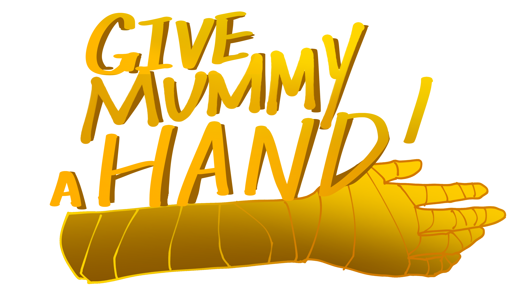

CARNEGIE MELLON UNIVERSITY
Give Mummy a Hand
A VR game built around custom hand-shape interactions, gameplay systems, and collaborative level design.
- Designed game mechanics and story background.
- Tested and designed hand-shape recognition using Meta building blocks.
- Programmed game structure, audio, and scene managers.
- Collaborated on level design.